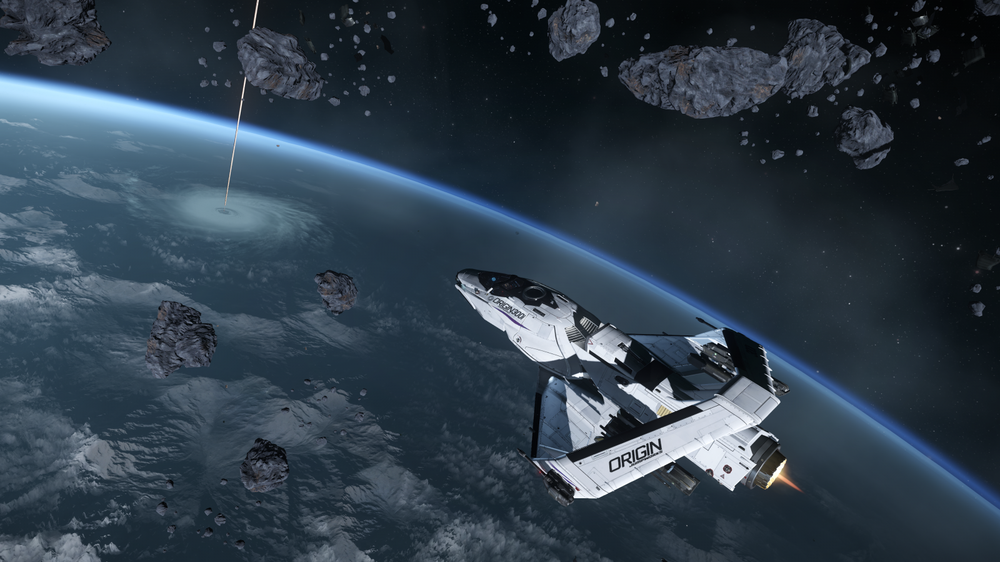
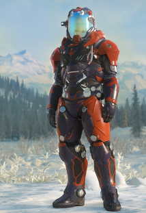

Les extras
Cependant, l’espace ne sert pas juste à rêver, il est aussi représenté par son immensité et sa diversité. Rien que le nombre de galaxies, de planètes, ou de systèmes suffit à nous donner mal à la tête. Cet aspect à mis du temps à être exploité dans l'industrie vidéoludique pour des raisons techniques, mais il est sans aucun doute la vision de l’espace la plus représentée aujourd’hui. En effet, la diversité d'environnement qu’offre l’espace peut devenir un outil de game design très pratique pour certains développeurs.
Star Citizen est un jeu de simulation spatiale massivement multijoueur développé par Cloud Imperium Games. Le jeu est en phase alpha en développement ouvert, ce qui signifie que même si le jeu n’est pas encore sorti, les joueurs peuvent jouer à une version régulièrement mise à jour, disponible sur PC. Ce jeu à pour but de vous mettre dans la peau d’un humain vivant 930 ans après notre époque. Le jeu est en “sandbox”, ce qui signifie que vous pouvez faire plus ou moins ce que vous voulez.
Seulement une chose distingue Star Citizen des autres jeux de ce style dans l’espace : son ambition. Le jeu propose un univers persistant, dans lequel vous pouvez explorer des systèmes entiers à taille réelle sans aucun temps de chargement. Le but de Star Citizen est de simuler la vie dans ce futur lointain de la manière la plus réaliste possible, et de donner au joueur une liberté totale. Vous pouvez être un marchand, un chasseur de primes, un pirate de l’espace, ou encore un collecteur ou un transporteur… Le jeu propose un grand nombre de possibilités d’intéractions avec l’univers du jeu et les autres joueurs.
 Dans l’univers de Star Citizen, chaque joueur contrôle un personnage dont les compétences, les choix et la réputation dépendent entièrement du joueur. Il n’y a pas d’arbre de compétences ou de statistiques, si un personnage est bon en combat, c’est uniquement grâce au joueur qui le contrôle ainsi que son équipement.
Tout dans le jeu est fait et designé pour renforcer l’immersion dans ce monde, nous donner l’impression d’y être une simple poussière, et de vivre notre vie dans un monde qui n’a pas besoin de nous pour fonctionner et avancer. Ce choix s’oppose à de nombreux jeux, ou les joueurs sont les héros d’un monde dépendant d’eux, là où dans Star Citizen vous n’êtes qu’une vis dans la grande machine de cet univers.

No Man’s Sky est un jeu de type sandbox développé par Hello Games et sorti en 2016 sur toutes les plateformes. No Man’s Sky vous met dans la peau d’un pilote de vaisseau spatial traversant l’espace dans le but d’atteindre le centre de la galaxie. Le jeu se déroule dans un univers généré de manière procédurale, ce qui signifie qu’il est créé au moment où le joueur l’explore.
Dans No Man’s Sky vous allez donc de planète en planète, afin de récolter des ressources pour atteindre votre objectif. Toutes les planètes sur lesquelles vous posez le pied sont différentes, et présentent un écosystème et une géographie différente des autres qu’en tant que découvreur du monde, il vous est possible de nommer et de partager aux autres joueurs. Car oui, le monde de No Man’s Sky est le même pour tous les joueurs. Seulement, sa taille gargantuesque fait qu’il est quasiment impossible de croiser un autre joueur ou une planète déjà découverte. En effet le nombre de planètes présentes dans le jeu est de 264 (soit plus de 18 trillions), ce qui en fait le plus grand univers de jeu-vidéo.
Mais la taille de l’univers n’a rien à envier à sa beauté. La grande diversité des environnements nous présente parfois des planètes aux couleurs aussi atypiques qu’époustouflantes ce qui donne au jeu un grand aspect contemplatif et des paysages toujours différents. En explorant l’univers, vous pouvez aussi trouver quelques vaisseaux en ruines contenant des histoires parfois terrifiantes, ou même établir un contact avec des populations autochtones pour faire du commerce. De petits contacts qui brisent votre solitude dans cet univers gargantuesque. Enfin, cette ambiance unique est sublimée par la bande-son envoûtante, composée par le groupe 65daysofstatic.
Malheureusement, le jeu souffre de quelques soucis. Une sortie du jeu à un état incomplet causant la colère des joueurs et un “bad buzz” ont rendu plus difficiles ses débuts. Et les nombreux bugs ternissent encore aujourd’hui sa réputation. Néanmoins, on ne peut pas lui retirer ses nombreuses qualités, et il représente à merveille l’espace et sa diversité.
La taille et la diversité de l’univers sont des éléments très utilisés par les développeurs. Ils permettent d’offrir une grande liberté artistique pour la création d’environnements et écosystèmes d’une grande diversité et originalité. Il est aussi très facile de donner l’impression d’être une goutte d’eau au milieu d’un océan grâce à la taille gargantuesque de l’espace. Et que ce soit No Man’s Sky ou Star Citizen, ces jeux ont tous les deux réussi à nous faire rêver grâce à cela.